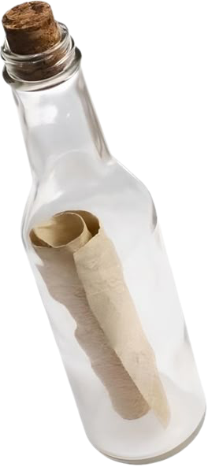
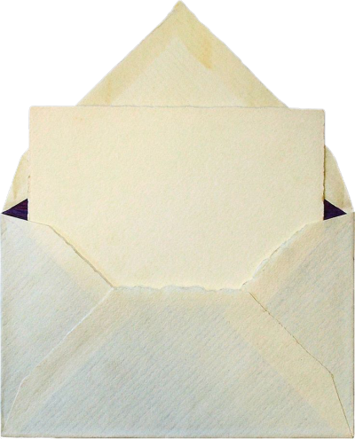
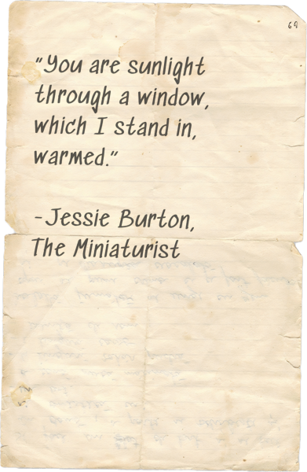
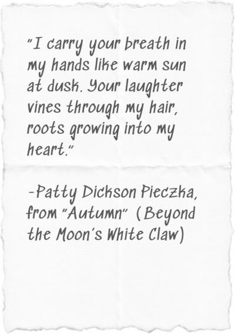
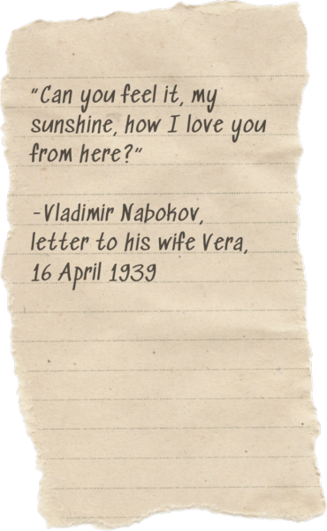
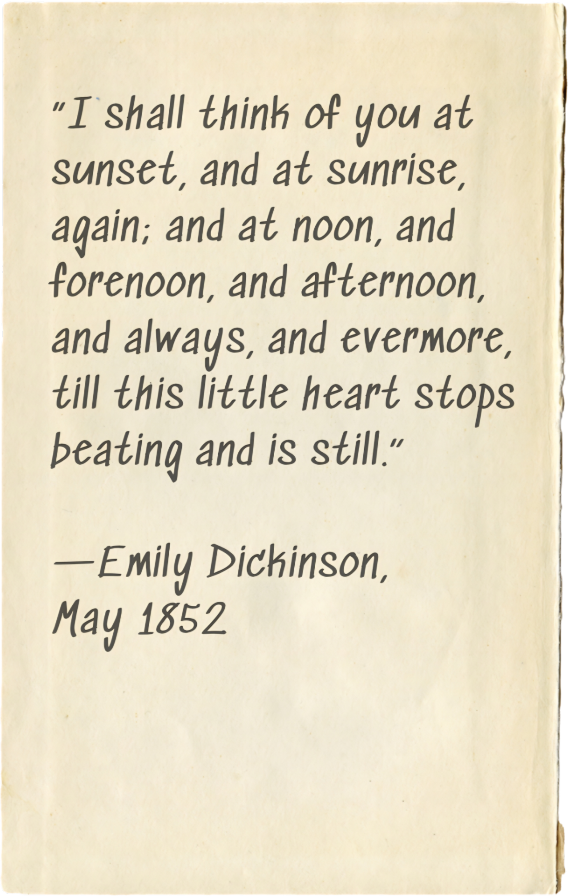
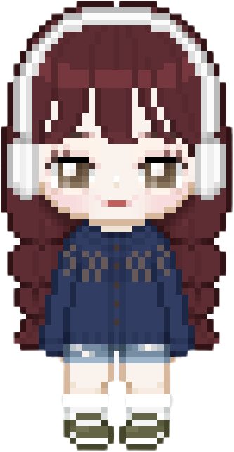
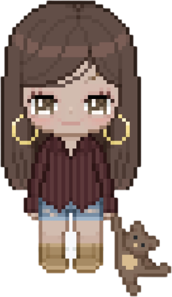

1

2

3

Make sure your volume is up and turn the record player on!
Looks like there was a paper left on the typewriter. Maybe you should read it?


Looks like someone lost some kind of bottle. . . would you mind fetching it?




be my valentine?

